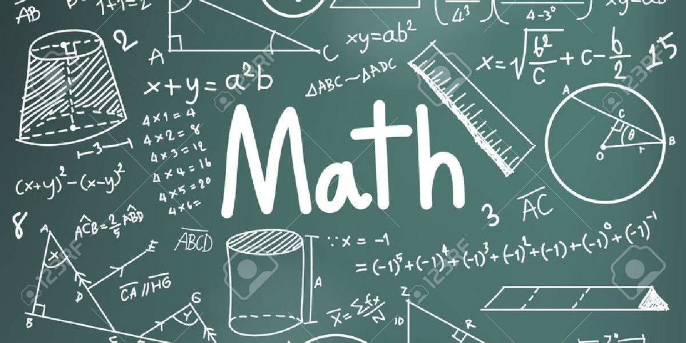

Aici puteţi găsi întreaga materie la matematica de M1, necesară pentru examenul de bacalaureat de la sfârșitul clasei a 12-a.
"Există lucruri care pot părea incredibile celor mai mulţi oameni care nu au studiat matematica."
Aristotel
